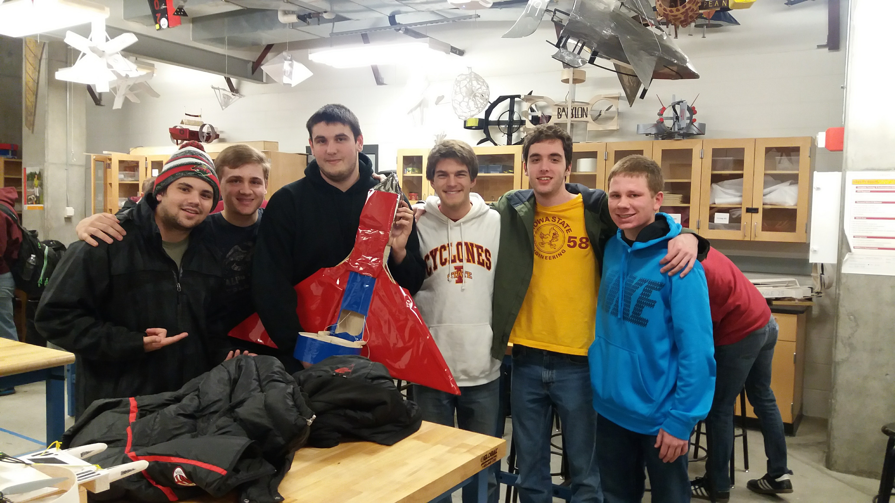
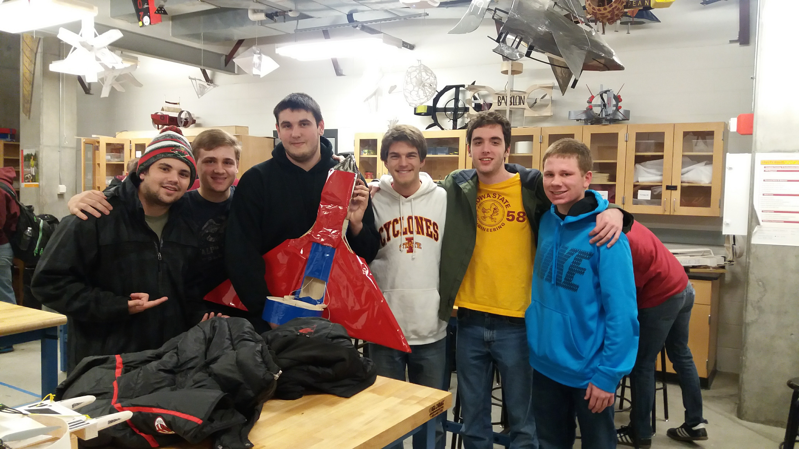

This site was a group project designed for a pet daycare manager to keep track of all the pets within the facility, the new technologies we used for this project was Handlebars, Express.js and MySQL
Click here to visit the github pageThis is my first website that I created in August 2021. It is made of only HTML and CSS. Click on the image to visit it.
This is my first utilization of APIs to grab weather data based on the user's city chosen.Click on the image to visit it.
Click here to visit the github page
In this application I used DOM manipulation, time methods, and local storage functionality in order to provide the user with a way to organize their day.
Click on the image to visit it.
Click here to visit the github page
This is my first JS code that will generate a password for you! Click on the image to visit it.
Click here to visit the github page


The three blue foam images are for a project to develop a drone to fly over crop fields to evaluate crop health.
This involved using a windtunnel to gather experimental data to back up our claims on the performance of the wing.

A team that I lead was called the JARVIF team. We designed and constructed a UAS in only two month's time
This was a reaserach project to check the accuracuy of AAA software which is used in commercial aircraft evaluation.
 

This competition team won first place. We were given a baloon to carry 85% of the aircrat's weight and then fly through an obstacle cource.
I was in charge of piloting the UAS, programming the controller, and some construction.


These images showcase my SolidWorks skills using only a 12" ruler and a waterbottle to take measurements on.
With this project, I learned how to apply screw constraints and render images to look more impressive.